Nubes moleculares y formación estelar
El cierre de la química de las nubes (self-shielding, rayos cósmicos, el CO como trazador y termómetro) y el corazón de la clase: cómo una nube fría de 20 K colapsa hasta encender una estrella de millones de grados — gracias a que el CO y el H₂ funcionan como sistema de refrigeración.
La formación estelar es, en palabras del profesor, «uno de los procesos astrofísicos que todavía nos falta por entender bastante». Tenemos una buena historia — sabemos cómo tiene que ser el proceso a grandes rasgos — pero es un área abierta y de investigación activa, no un capítulo cerrado en un libro de biblioteca. Esta clase termina lo pendiente de nubes moleculares (autoprotección, rayos cósmicos, el CO como termómetro) y luego cuenta esa historia: el colapso gravitacional de una nube fría, los mecanismos de enfriamiento que lo hacen posible, el primer y segundo colapso de Larson, y el misterio de las primeras estrellas del universo (Población III).
Repaso: el H₂ nace sobre el polvo, y con él la química
Hidrogenación de O, C y N: agua, hidrocarburos, amoníaco… y los pilares de la vida.
La clase retoma el punto donde quedó la anterior. La mayor parte del hidrógeno del universo está como hidrógeno ionizado (el protón solito — sigue llamándose hidrógeno porque la identidad química la da el número de protones del núcleo, no los electrones) o como hidrógeno neutro. Pero cuando se dan las condiciones — alta densidad y baja temperatura — el hidrógeno atómico se vuelve molecular, y eso ocurre principalmente sobre la superficie de los granos de polvo.
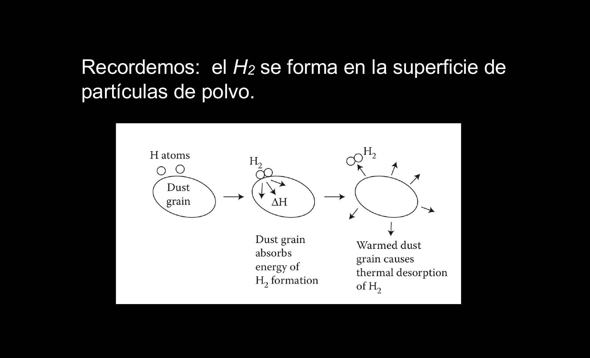
La molécula de H₂ tiene un poquito menos de energía que la suma de sus partes. Muchos procesos físicos ocurren porque el sistema busca estados de menor energía; la diferencia no se pierde: se libera al grano de polvo y termina devolviendo la molécula al gas.
En los granos no solo se forma H₂. También ocurre la hidrogenación del oxígeno, el carbono y el nitrógeno — los tres elementos más abundantes después de H y He:
- Hidrogenación del oxígeno → agua (H₂O).
- Hidrogenación del carbono → metano (CH₄) e hidrocarburos.
- Hidrogenación del nitrógeno → amoníaco (NH₃) → aminas → aminoácidos.
- O + C → CO; la hidrogenación del CO termina dando ácidos.
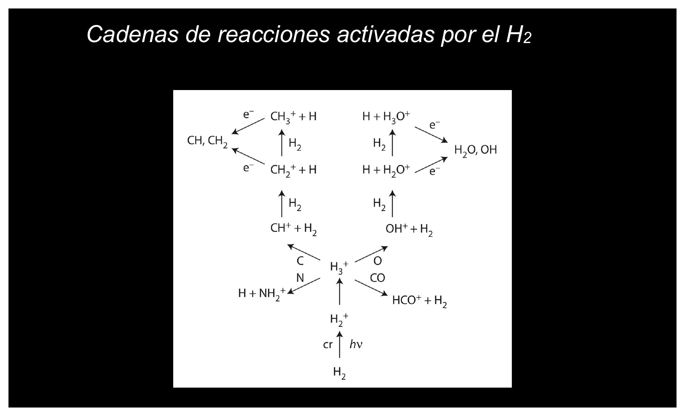
Cuando sale la noticia de que se detectaron moléculas prebióticas en un cometa, el hallazgo importa — pero para la astroquímica no es sorpresa: la hidrogenación de O, C y N es lo primero que ocurre en las nubes. No es casualidad que estemos hechos de agua y proteínas (aminoácidos): es lo que está más a la mano en el universo.
¿Esto se parece a la fusión del Sol? No. En los granos ocurren reacciones químicas: las median los electrones; los núcleos «ni se enteran». En la fusión del interior solar no hay electrones involucrados: dos protones desnudos (plasma) se fusionan y uno se transforma en neutrón — el núcleo cambia de carácter. Química = electrones; nuclear = núcleos.
¿El grano de polvo «es molecular»? Técnicamente no: los granos son sólidos iónicos o covalentes (silicatos, carburo de silicio) que forman redes, como la sal: el Cl⁻ y el Na⁺ se encadenan en cristales en vez de formar unidades independientes. Una molécula de agua, en cambio, puede «vivir sola» vagando por el universo. Aproximadamente la mitad del O, C y N de la nube está condensado en esos sólidos; la otra mitad anda suelto como átomos en el gas.
Bombardeo constante y autoprotección
Fotones UV y rayos cósmicos vs. el escudo de la superficie de la nube.
Las nubes moleculares necesitan condiciones muy especiales (10–30 K, es decir ~−250 °C; recordar que la escala Kelvin parte del cero absoluto = −273 °C) y sin embargo están siendo bombardeadas todo el rato por dos agentes destructivos:
- Fotones ultravioleta (y más energéticos): tienen tanta energía que cualquier cosa los absorbe — rompen enlaces, arrancan electrones.
- Rayos cósmicos: partículas cargadas (protones, electrones, partículas alfa = núcleos de helio) liberadas sobre todo en explosiones de supernova, que viajan a velocidades cercanas a la de la luz. «Cuando chocan con algo, lo hacen pedazos.»
¿Cómo sobrevive entonces el H₂? Por el fenómeno de autoprotección (self-shielding): los átomos y moléculas de la superficie de la nube «hacen la pega» de absorber los fotones UV, sacrificándose para que no penetren. El interior queda frío y calmo, y ahí la química puede avanzar. La clave está en las energías:
| Proceso | Energía requerida | Rol |
|---|---|---|
| Ionizar C | 11,3 eV | El más fácil: el carbono absorbe primero |
| Ionizar H | 13,6 eV | El H atómico también «se sacrifica» |
| Disociar H₂ | 15,4 eV | El más exigente: la mayoría de los fotones ya fue absorbida antes |
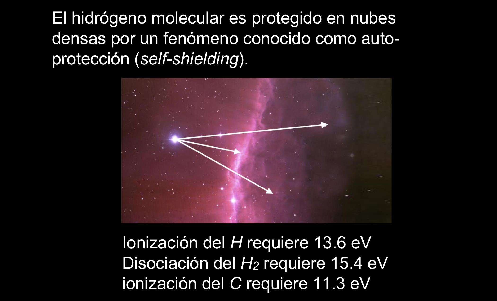
Los rayos cósmicos tienen tanta energía que sí penetran la nube, y son ellos los que rompen los granos de polvo. Pero eso cumple un rol: al romper el grano se liberan al gas las moléculas formadas en su superficie (agua, amoníaco, etc.), donde luego participarán en la formación estelar. Instinto aparte, «destructivo» no significa «malo»: las cosas son como son.
El self-shielding es una defensa en capas (defense in depth): la superficie actúa como capa DMZ que absorbe el tráfico hostil (UV) para que el interior opere tranquilo. Y nota el detalle de diseño: el firewall funciona porque los componentes baratos de ionizar (C, H) están en abundancia delante del recurso caro (H₂). Los rayos cósmicos son el ataque que atraviesa todas las capas — pero hasta ese “ataque” cumple una función en el sistema (libera moléculas al medio).
CO: el trazador del hidrógeno invisible
Lo que más hay no se ve; lo que se ve, delata a lo que más hay.
Una nube molecular en el óptico se ve oscura: el polvo extingue y enrojece (bloquea la luz, y deja pasar preferentemente la roja mientras absorbe la azul). Pero lo que más contiene — hidrógeno molecular — es además transparente: a esas densidades y temperaturas el H₂ no emite. El hidrógeno neutro al menos tiene la línea de 21 cm; el H₂ no tiene nada equivalente. Lo que más hay, no se puede ver directamente.
La salida: se descubrió que la formación de H₂ va de la mano con la formación de monóxido de carbono (CO), y el CO sí emite — no en el óptico sino en radio, fotones de muy baja energía. Por eso son tan importantes los radiotelescopios como ALMA. La regla operativa: donde veo CO, asumo que hay H₂, con una proporción de aproximadamente 1 CO por cada ~10⁵–10⁶ moléculas de H₂.
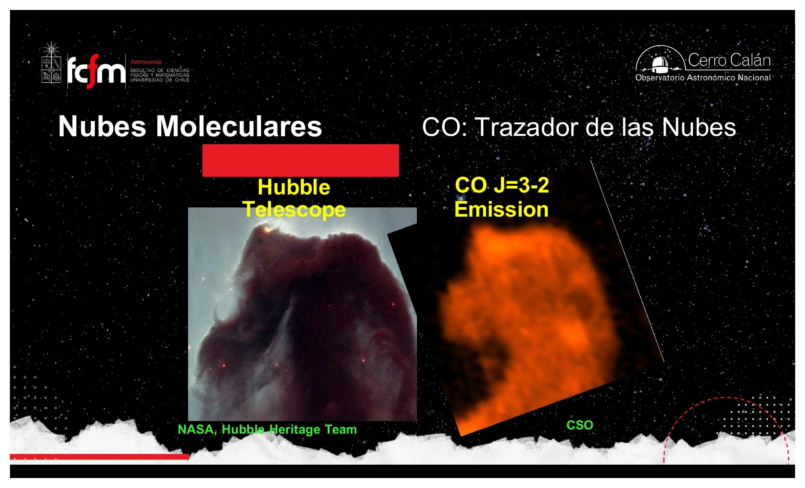
Ese «1 a un millón» varía según el ambiente — a veces es 10⁵, a veces más que 10⁶. Mónica Rubio (Premio Nacional de Ciencias, U. de Chile) y sus colaboradores han mostrado que el factor CO→H₂ varía bastante más de lo que uno quisiera. De ahí la broma gremial: «un factor de 2 en astronomía no es nada» — en muchos procesos astrofísicos lo que importa es el exponente, no la mantisa.
El CO es una métrica proxy: no puedes instrumentar la variable que te interesa (H₂), así que mides otra correlacionada y multiplicas por un factor de conversión. Y como toda métrica proxy, el factor driftea según el ambiente — usarlo como constante universal introduce un error sistemático difícil de acotar. La observación de Rubio es, en jerga nuestra, una recalibración del estimador por dominio.
Mapeando CO se mapean las nubes moleculares, y se ha descubierto que están asociadas a regiones de formación estelar — por ejemplo, toda la región de Orión, donde la Nebulosa de Orión (región HII, con estrellas ya nacidas que ionizan el gas) convive con vastas nubes moleculares frías que siguen formando estrellas. Y un detalle estructural importante: las nubes no son esféricas como nos gusta modelarlas; son filamentosas y grumosas, y autosimilares en un amplio rango de escalas (estadísticamente parecidas al hacer zoom — «prima hermana de un fractal», sin ser un fractal propiamente).
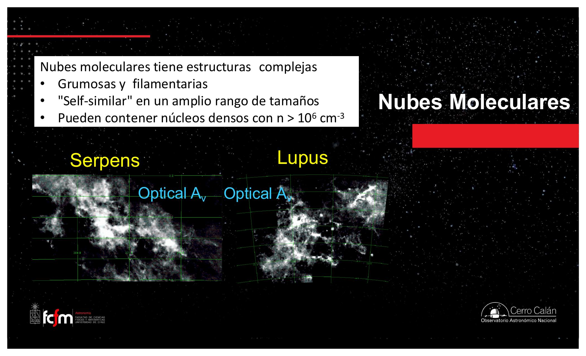
Rotación cuantizada: cómo tomarle la temperatura a una nube
Sin termómetro: mirando qué escalones de la escalera J se encienden.
Por qué el CO emite: el momento dipolar
El CO es una molécula sencilla: un carbono y un oxígeno unidos por enlace covalente (comparten electrones — a diferencia del enlace iónico de la sal, donde el cloro le quita el electrón al sodio). Pero el oxígeno es más electronegativo: la nube electrónica pasa más tiempo cerca del O. La molécula es neutra en total, pero el lado del oxígeno queda más negativo y el del carbono más positivo: tiene momento dipolar.
Esa asimetría tiene una consecuencia cuántica: la molécula no puede rotar a cualquier velocidad. Sus estados de rotación están cuantizados, igual que los niveles de energía del electrón en un átomo. Para etiquetarlos se usa el número cuántico J (J=0: sin rotación; J=1, 2, 3…: rotaciones cada vez más rápidas).
El electrón en un átomo «solo puede sentarse donde hay silla»: niveles discretos, nada de posiciones intermedias. La rotación de una molécula con dipolo es igual: velocidades de rotación permitidas, y nada entre medio. Para subir de nivel absorbe energía; al bajar, emite un fotón.
Choques, no fotones
En la nube, las excitaciones rotacionales ocurren sobre todo por choques entre moléculas: una molécula le pega a otra y la deja rotando más rápido — si trae suficiente energía cinética. Y como la temperatura es energía cinética promedio, la energía mínima para excitar cada salto se puede expresar como temperatura. Después del choque, los estados decaen solos: la molécula «se frena» espontáneamente, bajando escalón por escalón, y en cada bajada emite un fotón de muy baja energía que escapa de la nube sin que nada lo atrape.
| Transición | ΔE (en kelvin) | Frecuencia ν | λ |
|---|---|---|---|
| J = 1→0 | 5,5 K | 115,272 GHz | 2,7 mm |
| J = 2→1 | 11,0 K | 230,544 GHz | 1,3 mm |
| J = 3→2 | 16,5 K | 345,816 GHz | 0,87 mm |

El termómetro en acción
El método del radioastrónomo: sintonizar el telescopio en 115 GHz — ¿se ve CO J=1→0? Sí. ¿En 230 GHz (2→1)? También. ¿En 345 GHz (3→2)? Nada. Conclusión: los choques alcanzan para excitar hasta J=2 pero no J=3, así que la temperatura está entre ~16 y ~30 K (sumando los ΔE acumulados). «No podemos ir a ponerle un termómetro a la nube, pero buscando dónde dejamos de detectar transiciones obtenemos un límite.» Con densidades y temperaturas medidas, recién se puede hacer física: modelar y entender los procesos. Por eso las diapositivas hablan de temperatura de rotación (Tex = Trot): las intensidades relativas de las líneas entregan Trot.
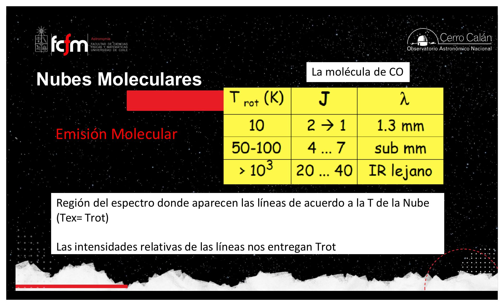
La línea de 21 cm es del hidrógeno atómico (HI), no del CO: es la transición hiperfina (acoplamiento de spines) de un electrón que prácticamente siempre vive en su estado fundamental. Las líneas del CO son rotacionales y viven en el rango milimétrico (2,7 mm, 1,3 mm…), no centimétrico.
El hidrógeno ionizado (HII) es ~90% de todo el hidrógeno del universo, pero vive en el medio intergaláctico (10⁻³–10⁻⁴ part/cm³, millones de grados — reliquia del universo temprano que no se enfriará jamás) y casi no juega rol en el medio interestelar. Dentro del medio interestelar domina el hidrógeno atómico; pero dentro de las nubes moleculares domina ampliamente el H₂. Ojo con la nomenclatura: HII (H romano dos) = ionizado; H₂ (subíndice) = molecular. «Los químicos se rayan con nuestra nomenclatura.»
El zoológico de nubes — y de dónde salió el C, N, O
Parámetros de las nubes y un paréntesis de evolución estelar.
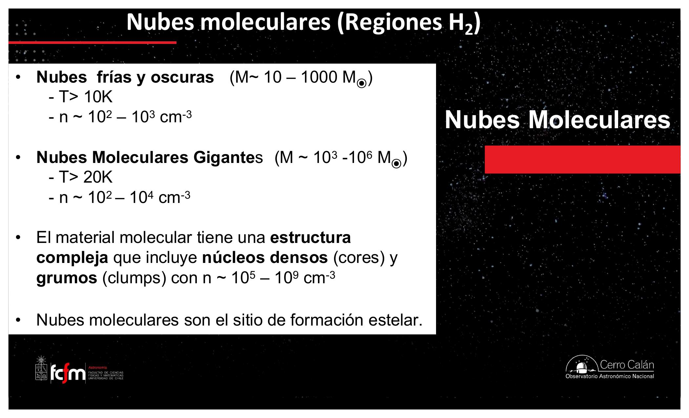
Una pregunta de la clase abrió un paréntesis valioso: ¿en qué momento aparecen el carbono, el oxígeno y el nitrógeno? Según la teoría del Big Bang — bien aceptada y verificada con precisión en las abundancias de deuterio, helio-3, litio — el universo nace solo con hidrógeno y helio. Todo el resto se cocinó dentro de estrellas:
- Una estrella pasa la mayor parte de su vida en la secuencia principal, fusionando H → He (el Sol, a 15 millones de grados centrales, está en eso).
- Al agotarse el H central, la estrella se reacomoda: se hincha (gigante roja) y el núcleo se contrae hasta ~100 millones de grados, donde el He empieza a formar carbono, nitrógeno y oxígeno.
- En sus últimas etapas la estrella se vuelve convectiva: el gas mismo transporta la energía (como el agua hirviendo en celdas de convección, en vez de fotones difundiéndose por un material opaco). Esas corrientes dragan C, N, O del núcleo a la superficie, donde los vientos estelares los liberan al medio interestelar.
- Las estrellas más masivas además explotan como supernovas, esparciendo C, N, O y elementos más pesados.
Las estrellas masivas — las únicas que fabrican los elementos realmente pesados — son las menos numerosas. Por eso los elementos pesados son escasos: el platino o el oro no son preciosos solo por sus cualidades químicas, sino porque se forman en condiciones muy especiales y poco frecuentes. La cadena abundancia-estelar → abundancia-química explica la tabla periódica del universo.
La Nebulosa de Orión es una región HII: ahí ya nacieron estrellas masivas que ionizan el gas con su flujo UV, y la vemos brillar en el óptico. Pero esa región es solo una parte visible de un complejo mucho más amplio de nube molecular filamentosa (visible en CO), que sigue fría y seguirá formando estrellas. Donde ves una región HII, espera encontrar al lado regiones oscuras y filamentos de CO: una región activa de formación estelar.
Formación estelar: el problema del colapso
De 20 K y 10⁶ part/cm³ a millones de grados y 10²⁴ part/cm³.
Por mucho tiempo la astronomía fue dominada por telescopios ópticos — y la formación estelar les estaba vedada, por dos razones: (1) las nubes son oscuras: el polvo bloquea la luz óptica; (2) los procesos dentro de la nube (química, rotaciones moleculares) emiten en radio, no en el óptico — aunque la nube fuera transparente, no habría mucho que ver. Solo cuando nace la estrella y se encienden las reacciones termonucleares, la energía empieza a escapar principalmente en el óptico. La radioastronomía (desde ~1950, con fuerza desde los 70) abrió por fin la ventana: es una ciencia de ~50 años, joven comparada con los siglos de astronomía óptica.
El requisito y el obstáculo
Para formar una estrella hay que pasar de gas a ~20 K y densidades de ~10⁵–10⁷ part/cm³ (las partes densas de las nubes) a millones de grados y ~10²⁴ part/cm³. Eso solo puede lograrlo el colapso gravitacional. La gravedad de una nube de varias masas solares está siempre tratando de contraerla (a diferencia de las nubes atmosféricas o de nosotros mismos, donde la autogravedad es insignificante — por eso no tenemos intuición de esto). ¿Qué lo impide? La presión térmica: las partículas tienen energía cinética, empujan hacia afuera, y en general las nubes están en equilibrio.
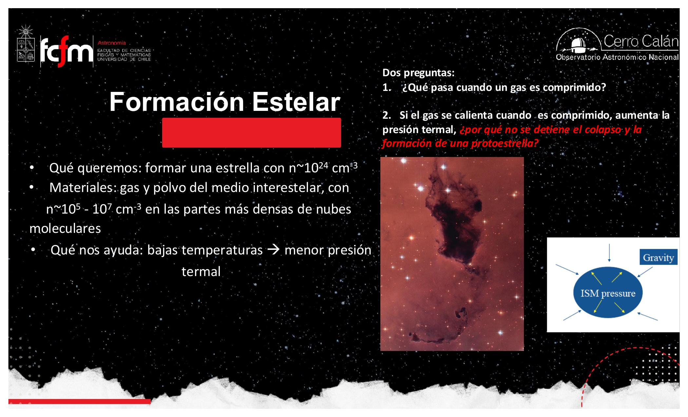
¿Cómo parte el colapso? Típicamente la nube en equilibrio recibe un golpe: una supernova cercana expulsa material a ~10.000 km/s (compárese con ~100 km/s de una estrella típica) y la onda de choque desestabiliza la nube. O bien algún proceso la enfría rápido — por ejemplo la propia formación de moléculas puede llevarla de ~100 K a ~20 K en millones de años (poco, en tiempos astronómicos) — y la presión térmica deja de ganar.
Nuestra intuición asocia gravedad con masa, pero no con tamaño. La fuerza va como M²/R²: si la Tierra se comprimiera a la mitad de su radio, la gravedad en superficie aumentaría sin cambiar la masa. Lo mismo en la nube: al achicarse, su gravedad superficial crece — una reacción en cadena que acelera el propio colapso.
Primer colapso: la nube que sabe enfriarse
El CO como radiador: por qué la temperatura no se dispara.
Aquí está «la parte de la historia más entretenida» según el profesor. Al comprimir un gas, sube la temperatura — eso es lo adiabático (sin intercambio de calor con el medio, como apretar el pistón de una jeringa). Si el colapso fuera adiabático, la presión se dispararía y el colapso se frenaría solo. Pero el primer colapso es no adiabático: la nube puede deshacerse del calor, y lo hace gracias a sus moléculas:
- El colapso convierte energía potencial gravitacional en energía térmica: las moléculas se mueven más rápido.
- Moléculas de CO chocan entre sí y se excitan a niveles rotacionales más altos.
- Se desexcitan espontáneamente, emitiendo fotones de radio (~115 GHz y armónicos).
- Esos fotones de baja energía escapan de la nube a la velocidad de la luz, llevándose la energía.
El CO actúa como radiador: transforma calor en fotones que se fugan. También ayuda el carbono: se ioniza por choques, y al recombinarse el electrón cae en cascada emitiendo fotones que también escapan. Resultado: la temperatura no sube lo suficiente para frenar el colapso, mientras la gravedad — que crece al achicarse R — aprieta cada vez más fuerte.
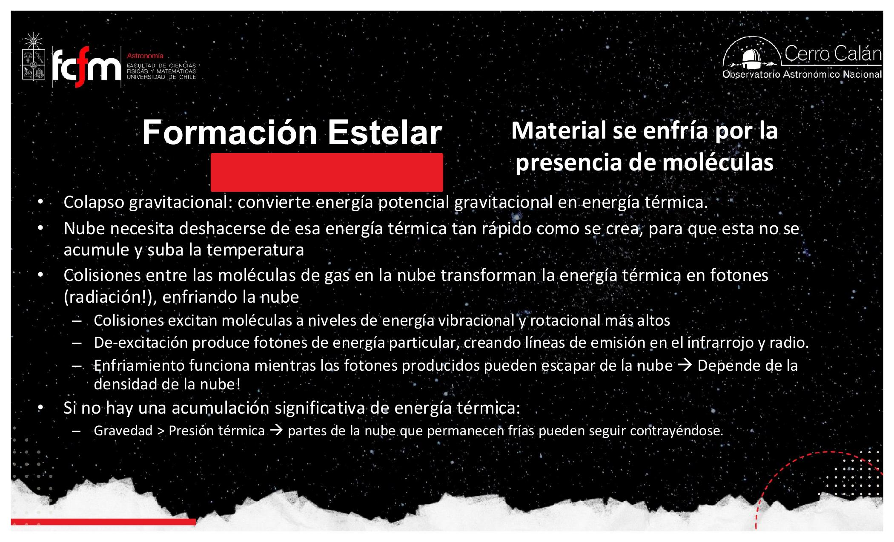
El colapso es un proceso con presupuesto térmico: la gravedad genera calor a cierta tasa y el CO lo disipa a otra. Es exactamente el problema de thermal throttling de un datacenter: mientras la refrigeración (radiación molecular) da abasto, el sistema puede seguir «subiendo la carga» (contrayéndose). El colapso se frena solo cuando el canal de disipación se satura — que es justo lo que viene ahora.
Opacidad, segundo colapso y protoestrella
Larson, el rescate del H₂ y el encendido termonuclear.
El radiador se tapa
El colapso aumenta la densidad sin parar. Cuando llega a ~10¹⁰–10¹¹ part/cm³, la nube se vuelve opaca a sus propios fotones de radio: los fotones que antes escapaban ahora son reabsorbidos — un efecto invernadero interno. La temperatura por fin se dispara, llega a ~1.000 K, y al alcanzar un nuevo equilibrio cerca de ~2.000 K el colapso se detiene. Tenemos un objeto más denso, más caliente, más pequeño… pero a 2.000 K, lejísimos de los millones de grados de una estrella. Este problema lo identificó Richard Larson (Universidad de Yale) hacia fines de los años 60: si nada más pasara, ahí quedaba la estrella a medio hacer.
El salvataje del hidrógeno molecular
A ~2.000 K los choques ya son tan violentos que el H₂ se empieza a disociar (romper en átomos). Y aquí la simetría hermosa: si al formarse el H₂ libera energía, al romperse la consume. La disociación funciona como un sumidero de calor: absorbe la energía que debería estar subiendo la temperatura, la presión no crece lo que debería, y la gravedad — cada vez más intensa a radios menores — vuelve a ganar: comienza el segundo colapso, que ya no se detiene.
- Nube fría (10–30 K): equilibrio entre gravedad y presión térmica.
- Gatillo: onda de choque de supernova o enfriamiento rápido → empieza el colapso.
- Primer colapso (no adiabático): el CO radia el calor; T se mantiene baja; la gravedad crece como 1/R².
- Opacidad (n ~ 10¹⁰–10¹¹ cm⁻³): los fotones quedan atrapados; T sube a ~1.000–2.000 K; el colapso se frena (problema de Larson).
- Disociación del H₂ (~2.000 K): consume calor → segundo colapso, imparable.
- Encendido: densidad y temperatura alcanzan el umbral termonuclear → protoestrella (que aún debe limpiar su entorno).
Por eso «las estrellas necesitan hidrógeno molecular»: no es solo que casualmente nazcan donde hay H₂ — es que el CO y el H₂ son los mecanismos de enfriamiento que permiten el colapso. Sin refrigerantes, no se forman estrellas (de baja masa, al menos).
El profesor guarda especial cariño por Larson: un científico al que le gustaba salir a caminar y sentarse a mirar el horizonte. «Así se hace ciencia», decía, extrañado de ver a todos pegados al computador. Otra época — pero el primer modelo numérico convincente del colapso protoestelar fue suyo.
Alta masa vs. baja masa
Este mecanismo — con su delicado sistema de refrigeración — es la historia de las estrellas de baja masa (como el Sol, hasta unas pocas M☉), que son la inmensa mayoría. Las estrellas masivas nacen de nubes mucho más masivas donde la gravedad (∝ M²) se impone sin tanta ayuda. La comunidad que estudia formación estelar se divide entre ambos regímenes, con mecanismos bastante distintos. Datos de referencia: el límite que separa morir como supernova de morir como enana blanca es ~8 M☉; solo ~7% de las estrellas supera las 8 M☉, y ~2% las 20 M☉.
Población III: las primeras estrellas
¿Cómo colapsar sin CO ni polvo? Con mucha, mucha masa.
La historia anterior tiene un agujero: el universo joven tenía solo hidrógeno y helio — sin carbono no hay CO, sin elementos pesados no hay polvo, sin polvo no hay fábrica de H₂ (al modo actual). ¿Cómo se formaron entonces las primeras estrellas, las que fabricaron el primer C, N, O?
- En el universo joven (p. ej. a los ~500.000 años) la densidad era muchísimo mayor que la actual: el H₂ sí podía formarse en fase gaseosa, sin granos de polvo. Un refrigerante parcial existía.
- Pero faltaban los «metales» (para los astrónomos: todo lo más pesado que el helio). Los cálculos mostraron que el colapso solo funcionaba con nubes de ~200 M☉, produciendo estrellas de ~50–100 M☉: la primera generación tuvo que ser de puras estrellas supermasivas.
- Consecuencia: vivieron poquísimo (~10 millones de años) y murieron todas como supernovas, contaminando rápidamente el gas con C, N, O — y habilitando desde entonces la formación de estrellas de baja masa.
Accidente histórico de los años 50: a las estrellas del vecindario solar se les llamó Población I y a las del halo galáctico, Población II. Después se descubrió que las del halo eran más viejas. Cuando hizo falta nombrar a la generación primordial — anterior a todas — solo quedaba el III. La numeración va en orden inverso a la edad.
Incomodidad científica: las Población III no se pueden observar hoy (murieron todas hace ~13 mil millones de años). La esperanza está en los telescopios de 40–50 metros en construcción, que podrían llegar a verlas en galaxias muy lejanas amplificadas por lentes gravitacionales. Una idea sin observación posible siempre es poco satisfactoria — por eso se las busca activamente.
El problema de Población III es un bootstrap clásico: el mecanismo normal de compilación (formar estrellas con refrigerante CO) requiere un compilador previo (estrellas que hayan fabricado carbono). La solución del universo fue un compilador de etapa cero: un mecanismo distinto, más tosco y caro (nubes de 200 M☉, fuerza gravitacional bruta), que corre una sola vez y genera las herramientas para que el proceso eficiente tome el control.
Ventanas atmosféricas y los cielos del norte de Chile
Por qué ALMA y TAO están a 5.000+ metros en Atacama.
La atmósfera terrestre es transparente en el óptico (afortunada coincidencia: el Sol emite casi toda su luz ahí) y vuelve a abrirse en el radio; pero en el infrarrojo lejano y submilimétrico es casi opaca — son las moléculas de agua las que absorben. Por eso la astronomía IR lejana se hacía con aviones (el telescopio SOFIA, montado en un avión a ~40.000 pies) o con telescopios espaciales.
La excepción terrestre: las montañas del norte de Chile. Sobre los 5.000 metros el aire es tan seco que se abren ventanas submilimétricas e IR lejanas. Para la astronomía óptica lo que importa es cielo oscuro y poco turbulento; para la submilimétrica lo que importa es cielo seco — y Atacama tiene ambos, más infraestructura e institucionalidad (la ley de 1962 y una política de Estado sostenida desde los años 60 que permite que los observatorios operen en Chile).
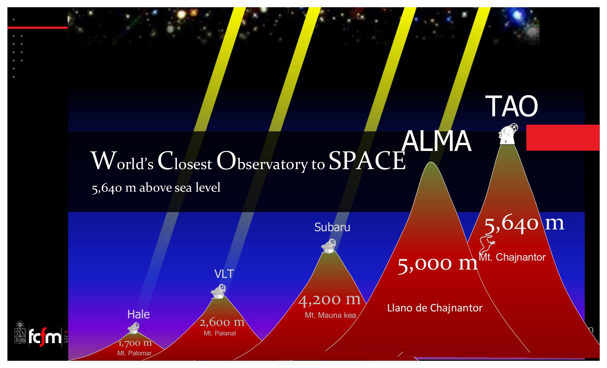
En el Llano de Chajnantor se han instalado APEX (12 m, Alemania), ASTE (10 m, Japón), NANTEN2 (4 m), y por supuesto ALMA, que opera principalmente en el submilimétrico — exactamente donde emite la escalera del CO. La astronomía de infrarrojo lejano es de las áreas jóvenes que está surgiendo con fuerza en Chile.
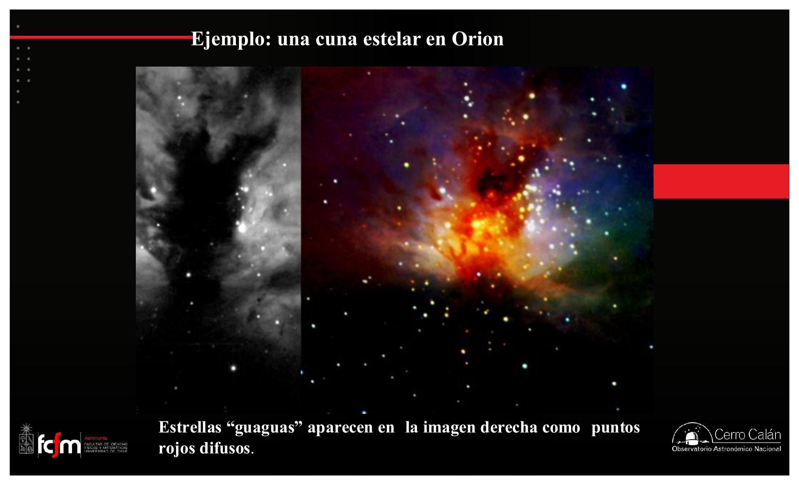
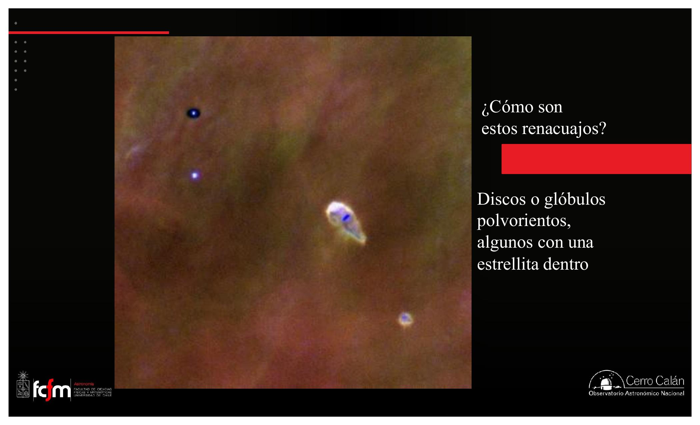
La próxima clase sigue con formación estelar en más detalle: qué pasa dentro de la nube filamentosa — cada filamento se fragmenta en grumos que colapsan por separado, y por eso las estrellas prácticamente nunca nacen solas: nacen en conjunto, en cúmulos. No es una nube → una estrella; es una nube → muchísimas estrellas.
Conceptos clave
Tabla de repaso rápido.
| Concepto | Qué es / valor | Por qué importa |
|---|---|---|
| Hidrogenación en granos | O→H₂O, C→CH₄, N→NH₃, CO→ácidos | La base química de la vida se fabrica en las nubes |
| Self-shielding | C (11,3 eV) y H (13,6 eV) absorben el UV antes de que disocie al H₂ (15,4 eV) | El interior de la nube queda frío y protegido |
| Rayos cósmicos | p, e⁻, α a velocidades ~c, de supernovas | Penetran la nube; rompen granos y liberan moléculas |
| CO trazador | ~1 CO por 10⁵–10⁶ H₂ (factor variable: M. Rubio) | Permite mapear el H₂ invisible |
| Momento dipolar | O más electronegativo que C → carga asimétrica | Habilita las transiciones rotacionales del CO |
| Escalera J del CO | 1→0: 5,5 K · 115 GHz; 2→1: 11 K · 230 GHz; 3→2: 16,5 K · 346 GHz | Termómetro de nubes: dónde se apaga la escalera acota T |
| HII vs HI vs H₂ | Ionizado (~90%, intergaláctico) / atómico (domina el ISM) / molecular (domina las nubes) | Censo del hidrógeno; cuidado con la nomenclatura |
| Colapso gravitacional | Gravedad vs. presión térmica; gatillo: shock de SN o enfriamiento | Único camino de 20 K a millones de grados |
| F ∝ M²/R² | La gravedad crece al achicarse R (masa constante) | El colapso se autoacelera: realimentación positiva |
| Colapso no adiabático | CO radia el calor en fotones de radio que escapan | La T no sube lo suficiente para frenar el colapso |
| Problema de Larson | A n ~ 10¹⁰–10¹¹ cm⁻³ la nube se opaca; T → 1.000–2.000 K; el colapso se frena | Sin un segundo mecanismo, no habría estrellas |
| Segundo colapso | A ~2.000 K el H₂ se disocia y consume calor | El colapso se reanuda hasta el encendido termonuclear |
| Protoestrella | Encendido de reacciones termonucleares; aún limpia su entorno | El final de la historia de formación (de baja masa) |
| 8 M☉ | Límite supernova / enana blanca; ~7% de las estrellas lo supera | Divide los dos regímenes de formación y muerte |
| Población III | Primera generación: ~50–100 M☉, solo H y He, murieron en ~10⁷ años | Fabricaron el primer C, N, O; aún sin observar |
| Chajnantor | ALMA (5.000 m), TAO (5.640 m): aire seco → ventanas submm/IR | Chile como laboratorio natural de la formación estelar |
Exámenes de práctica
10 exámenes de 5 preguntas (3 de alternativas autocorregibles + 2 de respuesta escrita).
- Examen 01H₂ y química en granos
- Examen 02Self-shielding y rayos cósmicos
- Examen 03CO como trazador
- Examen 04Rotación y termómetro
- Examen 05Origen del C, N, O
- Examen 06Colapso gravitacional
- Examen 07Enfriamiento y Larson
- Examen 08Segundo colapso
- Examen 09Población III y telescopios
- Examen 10Integrador